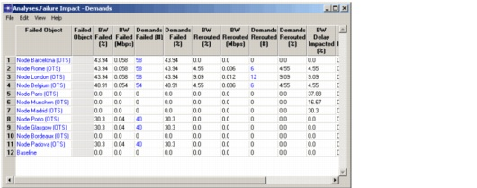

Designing Robust Multi-Layer Networks > SWIM Failure Analysis
SWIM Failure Analysis
Using SWIM, you can generate a web report that shows the effects of failures in the transport layer on links in the Layer-2/3 network. Each Failure Analysis report iterates through a set of failure cases; for each failure case, the report shows all failed links, unaffected links, and affected links (an "affected link" is a link whose delay is affected by the specified failure).
SP Guru Network Planner and SP Guru Transport Planner each have their own Failure Analysis operations. These operations differ in the following ways:
- SP Guru Transport Planner failure analysis (Info > Failure Analysis) analyzes the effects of transport-layer failures on the transport network only, and does not consider the effects of these failures on the Layer-2/3 network.
- SP Guru Network Planner survivability analysis (Flow Analysis > Configure/Run Survivability Analysis) studies the effects of failures in the transport network—fibers, cables, OXCs, DXCs—on link performance in the layer-2/3 network. For each failure scenario in the transport layer, survivability analysis analyzes the effects on Layer-2/3 links. Information on the effects of transport layer failures are included in the following reports:
- Analyses > Failure Impact-Demands: This report includes columns that show delay-impacted demands.
- Analyses > Delay Impacted Demands: This report summarizes the set of demands that were delayed by the transport-layer failure.
- Analyses > Failed Demands: This report includes columns that show the end-to-end delay for failure and baseline scenarios.
- Analyses > Rerouted Demands: This report includes columns that show the end-to-end delay for failure and baseline scenarios.
Figure 6-2 Failure Impact-Demands Report with Failed Transport Nodes

For more information about the other types of Failure Analysis, see the following sections:
- "Using Failure Impact Analysis" chapter (Flow Analysis User Guide in SP Guru Network Planner documentation)
| Home © 1987-2007 OPNET Technologies, Inc. All Rights Reserved. This software may be covered by one or more U.S. Patents. See complete patent notice in the Legal Notices section. OPNET Support Center |